IDENTITAS & INFORMASI LKPD
Isi identitas dulu ya:
Capaian Pembelajaran
-
Pada akhir Fase F, peserta didik mampu memahami sifat, struktur, dan interaksi partikel dalam membentuk berbagai senyawa serta kaitannya dengan sifat zat dalam kehidupan sehari-hari.
Tujuan Pembelajaran
- Peserta didik dapat menjelaskan pembentukan ikatan kovalen sebagai penggunaan pasangan elektron bersama untuk mencapai kestabilan atom..
- Peserta didik dapat membedakan ikatan kovalen tunggal, rangkap dua, dan rangkap tiga berdasarkan jumlah pasangan elektron yang digunakan bersama.
- Peserta didik dapat menganalisis hubungan pembentukan ikatan kovalen dengan sifat atau peran molekul sederhana dalam kehidupan sehari-hari..
Pernahkah kalian memperhatikan bagaimana dalam kehidupan sehari-hari, kita sering harus berbagi agar semuanya berjalan dengan baik?
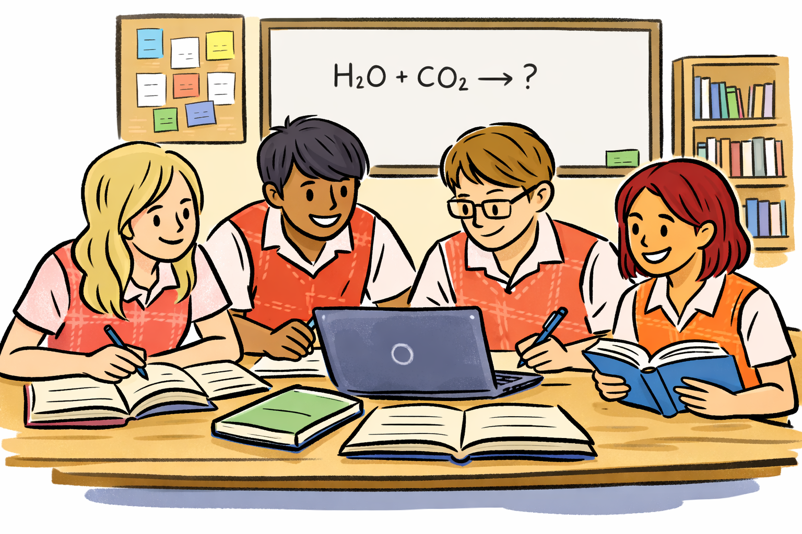
Misalnya, saat kalian mengerjakan tugas kelompok, tidak mungkin hanya satu orang yang bekerja sendiri. Setiap anggota perlu berbagi peran dan saling membantu agar tujuan bersama dapat tercapai.
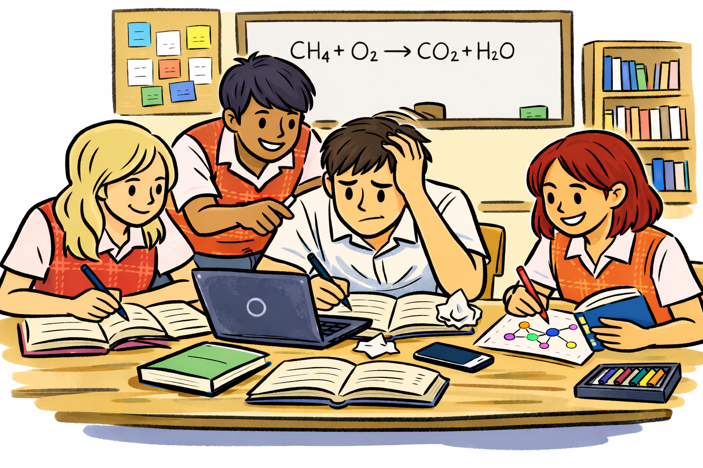
Begitu juga ketika ada teman yang membutuhkan, kita cenderung memberikan bantuan atau berbagi sesuatu supaya keadaan menjadi lebih seimbang.
Ternyata, hal yang mirip juga terjadi pada dunia kimia! Tidak semua atom berada dalam keadaan stabil. Beberapa atom memiliki jumlah elektron valensi yang belum lengkap sehingga mereka “menginginkan” keadaan yang lebih stabil, seperti gas mulia.
Namun, berbeda dengan ikatan ion yang terjadi karena perpindahan elektron, ada atom-atom tertentu yang tidak mudah melepaskan atau menerima elektron sepenuhnya. Sebagai gantinya, atom-atom tersebut memilih cara lain: mereka berbagi pasangan elektron.
Dengan berbagi elektron, kedua atom dapat sama-sama merasa “cukup” dan mencapai kestabilan. Hubungan inilah yang disebut sebagai ikatan kovalen.
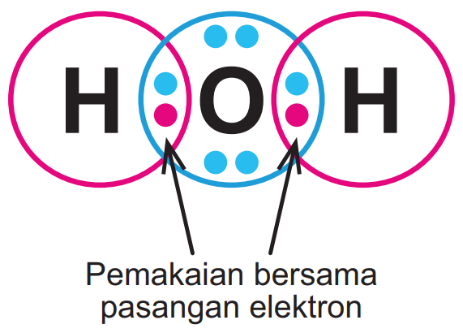
Pemakaian bersama pasangan elektron (contoh H₂O)
Atom hidrogen (H) tidak bisa stabil sendirian karena hanya memiliki 1 elektron, sedangkan ia membutuhkan 2 elektron agar seperti helium (aturan duplet). Atom oksigen (O) memiliki 6 elektron valensi dan membutuhkan 2 elektron lagi agar mencapai 8 elektron (aturan oktet). Maka, dua atom H akan berbagi pasangan elektron dengan atom O sehingga terbentuk molekul H₂O. Dengan begitu, H mencapai duplet dan O mencapai oktet—keduanya menjadi lebih stabil.
1) Mengapa pada ikatan ion atom bisa transfer elektron sedangkan pada ikatan kovalen cenderung berbagi pasangan elektron?
🔥 Polling Cepat
Menurutmu ikatan kovalen terjadi karena…
📚 Materi Singkat (Untuk Exploration)
Klik tab materi berikut untuk melihat ringkasan sebelum menyelesaikan misi.
📌 Pengertian Ikatan Kovalen
✨ Apa itu ikatan kovalen?
Ikatan kovalen terbentuk akibat kecenderungan atom-atom untuk menggunakan elektron secara bersama (sharing elektron) agar memiliki konfigurasi elektron seperti gas mulia terdekat. Berbeda dengan ikatan ion yang melibatkan perpindahan elektron, pada ikatan kovalen elektron tidak sepenuhnya dipindahkan, melainkan dibagi antara atom-atom yang berikatan sehingga menghasilkan molekul netral. Dalam ikatan kovalen, setiap elektron dalam pasangan yang digunakan bersama ditarik oleh inti dari kedua atom.
🤝 Mengapa atom berbagi elektron?
- Ikatan kovalen umumnya terbentuk antaratom nonlogam.
- Nonlogam punya energi ionisasi tinggi (sulit melepas elektron).
- Nonlogam punya afinitas elektron tinggi, tapi tidak “nyaman” menerima elektron penuh seperti ion.
- Jadi, solusi yang paling cocok: berbagi elektron agar sama-sama stabil.
🧠 Hubungan dengan Oktet & Duplet
- Atom cenderung stabil jika elektron valensi menjadi 8 (oktet).
- Khusus H, stabil jika total elektron menjadi 2 (duplet) seperti He.
- Dengan berbagi elektron, atom bisa melengkapi oktet/duplet.
🟦 Struktur Lewis
- Titik (:) menunjukkan pasangan elektron.
- Garis (—) menunjukkan pasangan elektron yang dibagi (ikatan).
- Pasangan yang tidak dibagi disebut pasangan elektron bebas.
🧩 Jenis Ikatan Kovalen
1) Ikatan Kovalen Tunggal
Ikatan kovalen tunggal melibatkan 1 pasangan elektron (2 elektron) yang digunakan bersama oleh dua atom. Contoh: H₂ (H berbagi 1 pasangan untuk mencapai duplet).
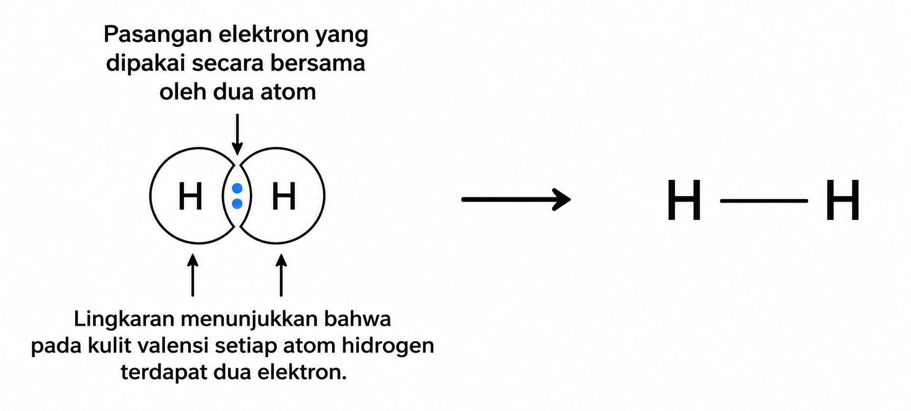
Elektron yang tidak berikatan disebut pasangan elektron bebas. Contoh: pada F₂ setiap F memiliki 3 pasangan elektron bebas.
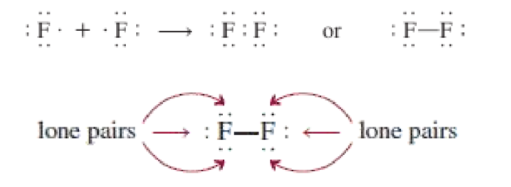
2) Ikatan Kovalen Rangkap Dua
Ikatan rangkap dua melibatkan 2 pasangan elektron (4 elektron) yang dibagi bersama. Contoh: O₂ (masing-masing O kekurangan 2 elektron untuk oktet).
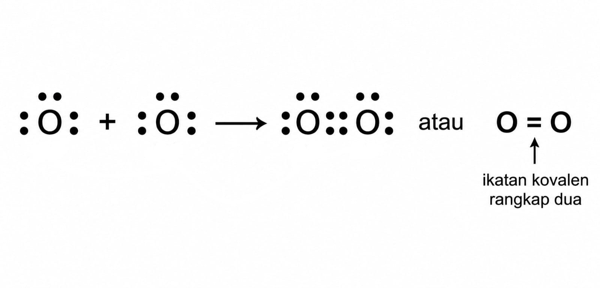
Contoh lain: CO₂ dengan struktur O=C=O (dua ikatan rangkap dua).
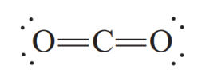
3) Ikatan Kovalen Rangkap Tiga
Ikatan rangkap tiga melibatkan 3 pasangan elektron (6 elektron) yang dibagi bersama. Contoh: N₂ (masing-masing N kekurangan 3 elektron untuk oktet) sehingga terbentuk ikatan N≡N.
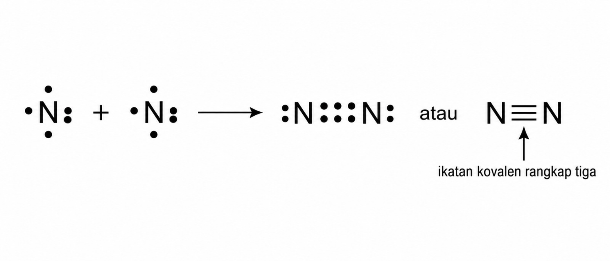
Hubungan panjang & kekuatan ikatan:
Panjang ikatan: tunggal > rangkap dua > rangkap tiga (semakin rangkap, semakin pendek).
Kekuatan ikatan: rangkap tiga > rangkap dua > tunggal (semakin pendek, umumnya semakin kuat & stabil).
🧷 Ikatan Kovalen Koordinasi
✨ Apa itu Ikatan Kovalen Koordinasi?
Ikatan kovalen koordinasi adalah ikatan kovalen di mana sepasang elektron ikatan berasal dari satu atom saja (atom donor), kemudian digunakan bersama untuk berikatan dengan atom lain (atom akseptor) yang memiliki orbital kosong atau kekurangan elektron.
🧪 Contoh: Ikatan O–H pada H3O⁺
Ion H₃O⁺ terbentuk dari H₂O yang mengikat H⁺; pada molekul H₂O, atom O memiliki pasangan elektron bebas, sedangkan ion H⁺ tidak memiliki elektron, sehingga salah satu pasangan elektron bebas dari O digunakan untuk membentuk ikatan dengan H⁺.
Mengapa disebut koordinasi?
Ion H⁺ tidak membawa elektron, sehingga ikatan terbentuk karena pasangan elektron
berasal seluruhnya dari atom O (donor). Karena itu, ikatan antara O dan H⁺ pada H₃O⁺
merupakan ikatan kovalen koordinasi.
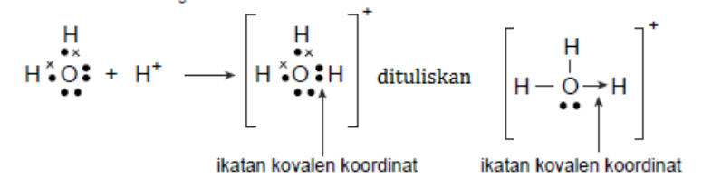
📌 Contoh Lain Ikatan Kovalen Koordinasi
Ikatan kovalen koordinasi juga dapat terjadi pada molekul:
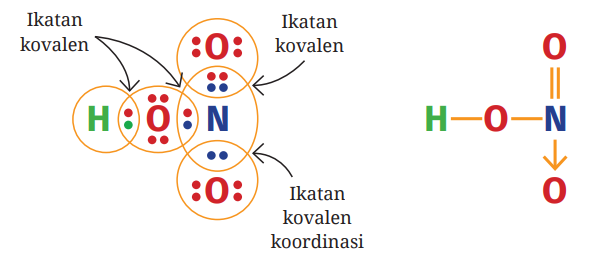
Setelah ikatan terbentuk, pasangan elektron tersebut menjadi milik bersama antara atom O dan atom H, sehingga secara struktur ikatan O–H tidak dapat dibedakan dengan ikatan kovalen biasa dalam molekul HNO₃.
- NH₃BF₃ → pasangan elektron bebas N (donor) mengisi orbital kosong B (akseptor).
- NH₄⁺ → NH₃ mendonorkan pasangan elektron bebas ke H⁺.
- SO₃ → pasangan elektron bebas dapat berperan mengisi orbital kosong sehingga mendukung kestabilan struktur.
Intinya: pasangan elektron bebas dari satu atom mengisi orbital kosong atom lain, sehingga keduanya lebih stabil dan dapat memenuhi kaidah oktet.
🧷 Kepolaran Ikatan Kovalen
Berdasarkan kepolaran, ikatan kovalen dibedakan menjadi ikatan kovalen polar dan ikatan kovalen nonpolar. Kepolaran terjadi karena perbedaan keelektronegatifan antar atom yang berikatan. Akibatnya, pasangan elektron ikatan lebih tertarik ke salah satu atom sehingga muncul muatan parsial δ− dan δ+.
1) Ikatan Kovalen Polar
Ikatan kovalen polar terbentuk ketika atom-atom yang berikatan memiliki perbedaan keelektronegatifan. Atom yang lebih elektronegatif akan menarik pasangan elektron lebih kuat, sehingga terbentuk δ− pada atom tersebut dan δ+ pada atom pasangannya.
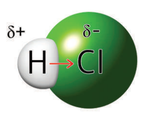
Contoh: HCl, HF, H₂O, NH₃.
2) Ikatan Kovalen Nonpolar
Ikatan kovalen nonpolar terbentuk jika pasangan elektron dibagi merata, biasanya terjadi pada atom-atom nonlogam sejenis (keelektronegatifannya sama atau hampir sama), sehingga tidak muncul δ+ dan δ−.
Contoh: H₂, N₂, O₂, Cl₂.
✅ Kesimpulan Cepat
- Polar: elektron tertarik tidak merata → muncul δ+ dan δ−.
- Nonpolar: elektron dibagi merata → tanpa muatan parsial.
⚙️ Sifat Senyawa Kovalen
Senyawa kovalen memiliki sifat fisis yang beragam, tergantung pada jenis struktur molekul yang dibentuk. Berdasarkan strukturnya, senyawa kovalen dapat dibedakan menjadi kovalen sederhana dan kovalen raksasa.
Senyawa kovalen sederhana tersusun atas molekul-molekul kecil, seperti metana (CH₄) dan air (H₂O). Antar molekulnya hanya terdapat gaya antarmolekul yang lemah. Akibatnya, molekul-molekul tersebut mudah terpisah ketika dipanaskan.


Contohnya, metana (CH₄) berfase gas pada suhu ruang karena gaya antarmolekulnya sangat lemah, sehingga memiliki titik didih rendah.
Berbeda dengan senyawa kovalen sederhana, pada struktur kovalen raksasa atom-atomnya saling berikatan kovalen membentuk jaringan tiga dimensi yang sangat kuat. Contohnya adalah silikon dioksida (SiO₂) dan karbon dalam bentuk intan.


Pada intan, atom-atom karbon saling berikatan kovalen sangat kuat dalam satu jaringan raksasa. Oleh karena itu, intan memiliki titik didih sangat tinggi. Senyawa kovalen raksasa umumnya tidak larut dalam air dan tidak menghantarkan listrik, kecuali grafit.
📝 Ringkasan Sifat Senyawa Kovalen
- Senyawa kovalen sederhana memiliki titik leleh dan titik didih relatif rendah.
- Senyawa kovalen raksasa memiliki titik leleh dan titik didih sangat tinggi.
- Senyawa kovalen umumnya tidak menghantarkan listrik.
- Sifat senyawa kovalen dipengaruhi oleh jenis struktur molekulnya.
🧪 Lab Virtual: Chemical Bonding
Gunakan simulasi berikut untuk mengamati bagaimana atom-atom membentuk ikatan dengan cara berbagi elektron.
💡 Jika simulasi tidak muncul, buka langsung: JavaLab Chemical Bonding
🧪 Misi Lab Ceria
Selesaikan misi berikut. Pilih jenis ikatan & jawab singkat.
Misi 1: Susun H₂
H punya 1 elektron valensi → butuh duplet (2).
Misi 2: Susun O₂
O punya 6 elektron valensi → butuh oktet (8).
Misi 3: Susun N₂
N punya 5 elektron valensi → butuh oktet (8).
Misi 4: Susun CO₂
C butuh 4 e⁻ untuk oktet; O butuh 2 e⁻.
✅ Checkpoint 1
O₂ memiliki ikatan rangkap dua karena…
🧠 UNGKAP PEMAHAMANMU
Ayo jelaskan hasil pengamatanmu. Pilih kata kunci, susun urutan, dan tulis kesimpulanmu. Klik Cek Jawaban untuk melihat feedback otomatis 😊
1) Mengapa H₂ hanya membentuk satu ikatan, sedangkan O₂ dan N₂ membentuk ikatan rangkap?
Pilih kata kunci yang sesuai (boleh lebih dari satu):
2) Perbedaan utama ikatan tunggal, rangkap dua, rangkap tiga?
Geser untuk memilih jumlah pasangan elektron yang dibagi:
3) Berdasarkan tabel, molekul manakah yang ikatannya paling kuat? Jelaskan alasannya.
Susun urutan kekuatan ikatan (terkuat → terlemah) dengan cara klik tombol naik/turun:
4) Dari hasil pengamatanmu, bagaimana ciri umum senyawa kovalen?
Pilih ciri yang paling sesuai:
✅ Rekap Cepat
Klik tombol ini jika kamu sudah mengisi semuanya. (Jawaban tetap disimpan saat klik SELESAI nanti.)
🌍 Menerapkan Konsep Ikatan Kovalen dalam Kehidupan Sehari-hari
Air (H₂O) kita minum setiap hari, oksigen (O₂) kita hirup untuk bernapas, dan karbon dioksida (CO₂) dihasilkan dari proses pernapasan. Ketiga zat ini tersusun dari atom-atom nonlogam dan berikatan secara kovalen. Pilih satu molekul lalu analisis ikatan dan manfaatnya.
✅ Pilih satu molekul untuk dianalisis
Refleksi (Ya/Tidak)
Catatan: file ini menyimpan jawaban ke localStorage browser.